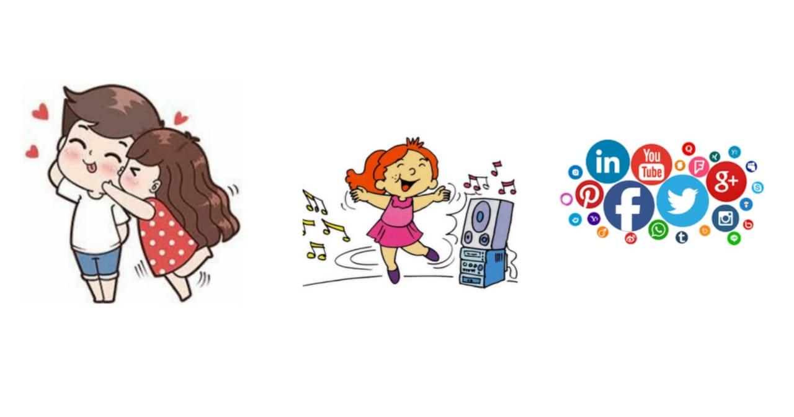
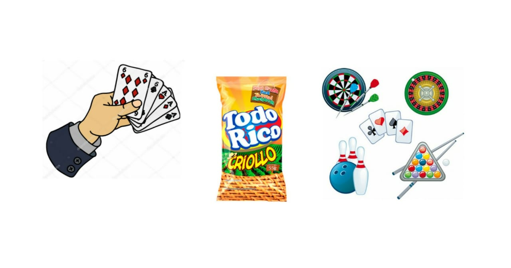
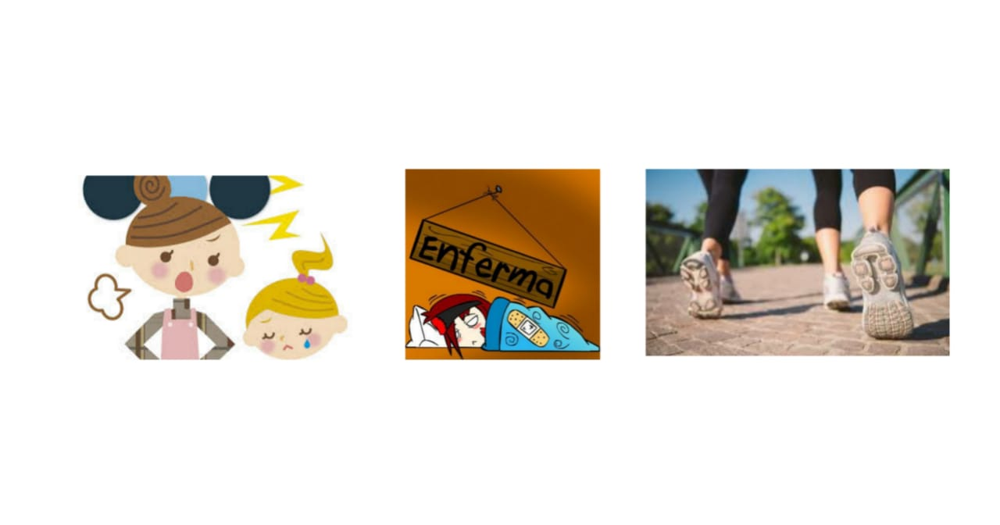
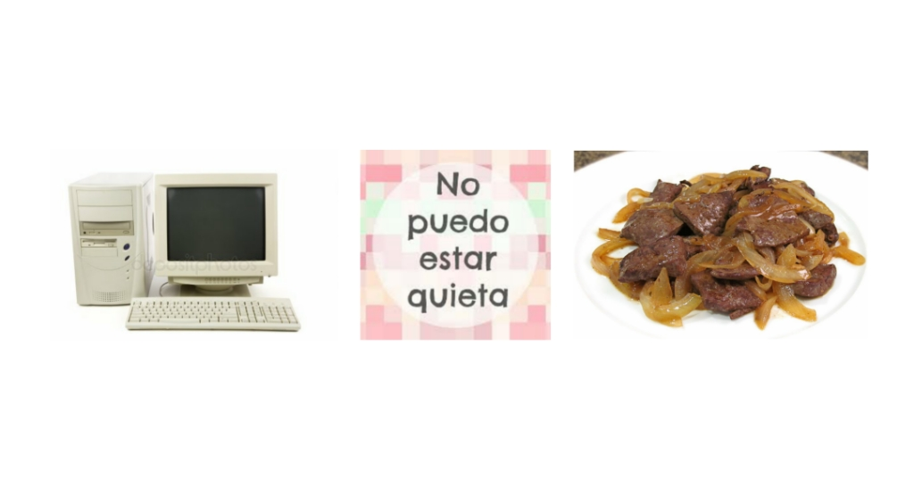

<!--
@license
Copyright (c) 2016 The Polymer Project Authors. All rights reserved.
This code may only be used under the BSD style license found at http://polymer.github.io/LICENSE.txt
The complete set of authors may be found at http://polymer.github.io/AUTHORS.txt
The complete set of contributors may be found at http://polymer.github.io/CONTRIBUTORS.txt
Code distributed by Google as part of the polymer project is also
subject to an additional IP rights grant found at http://polymer.github.io/PATENTS.txt
-->

<link rel="import" href="../bower_components/polymer/polymer-element.html">
<link rel="import" href="../bower_components/iron-media-query/iron-media-query.html">
<link rel="import" href="../bower_components/l2t-paper-slider/l2t-paper-slider.html">
<link rel="import" href="../bower_components/paper-card/paper-card.html">
<link rel="import" href="shared-styles.html">

<dom-module id="my-lindsey">
  <template>
    <style include="shared-styles">
      :host {
        display: block;

        padding: 10px;
      }


      l2t-paper-slider {
        --paper-slide-height: 300px;
        --paper-slide-dot-styles:{
          --paper-slide-dot-selected: #154360 ;
          --paper-slide-dot:  #5dade2 ;
        };
      }
      @media(max-width: 600px) {
        img{
          width:200px;
        }
        img.smallscreen{
          width:300px;

        }
      }
      iron-image {
        display: block;
        width: 100%;

      }
      paper-slide {
        line-height: 200px;
        font-size: 64px;
        text-align: center;
        vertical-align: middle;
        color: white;
        background: white;
      }

    </style>
    <script src="../bower_components/webcomponentsjs/webcomponents-lite.js"></script>
    <iron-media-query query="(max-width: 900px)" query-matches="{{smallscreen}}"></iron-media-query>

    <template is="dom-if" if="{{smallscreen}}">
      <paper-card image="../images/lindsey2.png">
        <div class="card-content">
          <div class="cafe-header">
            <h1>¿Quien soy?</h1>
          </div>
          <p class="cafe-light">Una estudiante de ingeniería de sistemas de la universidad distrital, con un poco de experiencia en dirección y producción de radio y televisión, con un talento nato para el diseño de banners y creación de contenido audio visual, además soy una persona que tiene una gran pasión por experimentar y descubrir cosas nuevas, tiendo a ser una persona muy extrovertida y aunque suelo ser muy divertida tengo un carácter muy fuerte.</p>
        </div>

      </paper-card>
    </template>
      <template is="dom-if" if="{{!smallscreen}}">
        <paper-card image="../images/lindsey3.png">
          <div class="card-content">
            <div class="cafe-header">

              <h1>¿Quien soy?</h1>
            </div>
            <p class="cafe-light">Una estudiante de ingeniería de sistemas de la universidad distrital, con un poco de experiencia en dirección y producción de radio y televisión, con un talento nato para el diseño de banners y creación de contenido audio visual, además soy una persona que tiene una gran pasión por experimentar y descubrir cosas nuevas, tiendo a ser una persona muy extrovertida y aunque suelo ser muy divertida tengo un carácter muy fuerte.</p>
          </div>

        </paper-card>
      </template>

    <paper-card>
      <div class="card-content">
        <div class="cafe-header">
          <l2t-paper-slider auto-progress slide-duration="3">
            <paper-slide>  </paper-slide>
            <paper-slide> </paper-slide>
            <paper-slide>  </paper-slide>
            <paper-slide> </paper-slide>

          </l2t-paper-slider>
          <h1>¿Lo que me gusta y lo que no?</h1>
        </div>
        <div class="cafe-light">
          <p>Me gusta...</p>
        <ul>
          <li>Mi novio</li>
          <li>Las redes sociales, estar actualizada con el mundo</li>
          <li>Bailar, salir y divertirme </li>
          <li>Jugar Poker y uno</li>
          <li>Trabajar en recreación </li>
          <li>El De Todito criollo sin ají</li>
        </ul>
          <p>No me gusta...</p>
          <ul>
            <li>El hígado</li>
            <li>Estar muy quieta</li>
            <li>Tener un computador tan malo </li>
            <li>Que me den ordenes </li>
            <li>Caminar </li>
            <li>Estar enferma</li>
          </ul>
        </div>
      </div>

    </paper-card>
    <paper-card image="../images/lindseycard3.jpeg">
      <div class="card-content">
        <div class="cafe-header"><h1>Anécdota o historia</h1>
        </div>
        <p class="cafe-light">Un día salí con mi mejor amiga y un niño que acababa de conocer, estábamos pensando en qué hacer y a él se le ocurrió ir a comprar una botella de Gran Niche y nos la tomáramos en algún lado, luego de eso fuimos a comprarla junto a un Frutiño sabor a mora, nos pusimos a pensar cuál podría ser el mejor lugar para ir a tomar, como no se nos ocurrió nada decidimos ir a caminar mucho hasta que encontramos un pequeño parque en frente de unos conjuntos, dijimos “¿por qué no?” y nos pusimos a tomarnos la botella ahí, no la tomamos muy rápido así que el alcohol nos empezaba a hacer efecto, por lo que tomamos una pequeña pausa para después, terminarnos la botella, nos devolvimos hacia la casa del novio de mi mejor amiga, pero en el camino a ella le dio ganas de ir al baño; habíamos comprado unos Doritos porque teníamos hambre y a pesar de que le pedimos que nos diera el paquete mientras entraba al baño, ella no quiso porque decía que nos lo íbamos a comer, cuando entró al baño tiró los Doritos por la taza del baño.
          Cuando salió y nos contó lo que había pasado sólo nos reímos y continuamos con nuestro camino hacia la casa del novio, cuando llegamos yo me acosté en la cama del hermano menor del novio de mi amiga, y ella en la del novio, el niño con el que nos encontramos se quería acostar conmigo y yo no se lo permití, esto hizo que se fuera a su casa y en el trayecto lo robaron, luego me dieron náuseas y vomité en una caneca, luego me fui a mi casa cuando me sentí mejor.
          Moraleja: No tomar Gran Niche.</p>
      </div>

    </paper-card>

  </template>

  <script>
    class myLindsey extends Polymer.Element {
      static get is() { return 'my-lindsey'; }
    }

    window.customElements.define(myLindsey.is, myLindsey);
  </script>
</dom-module>
